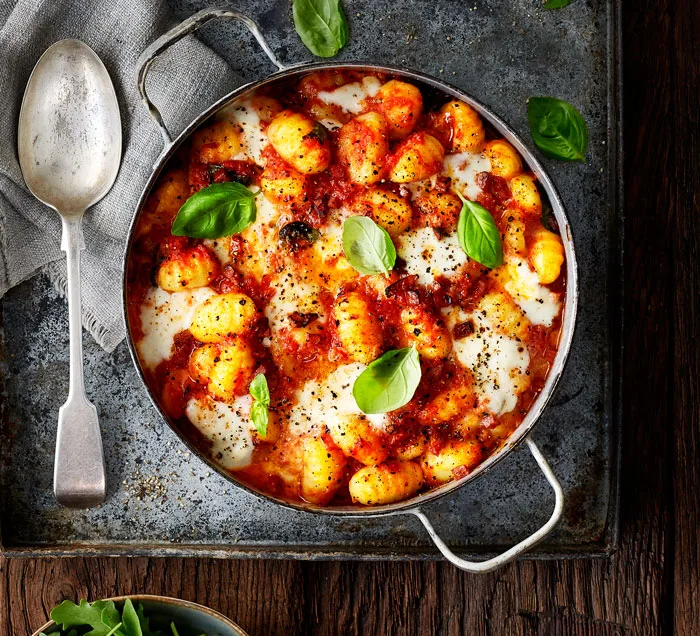
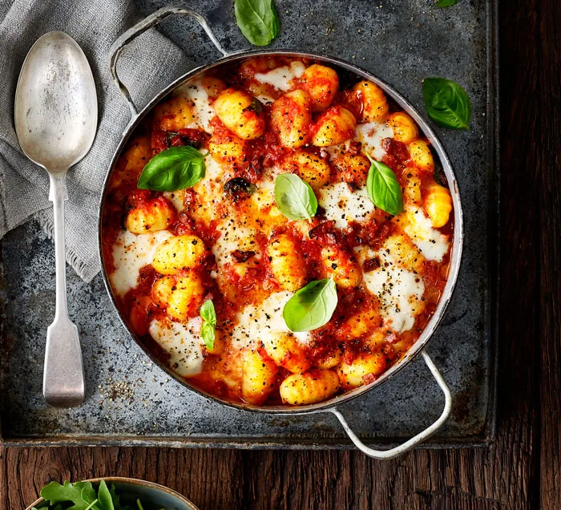
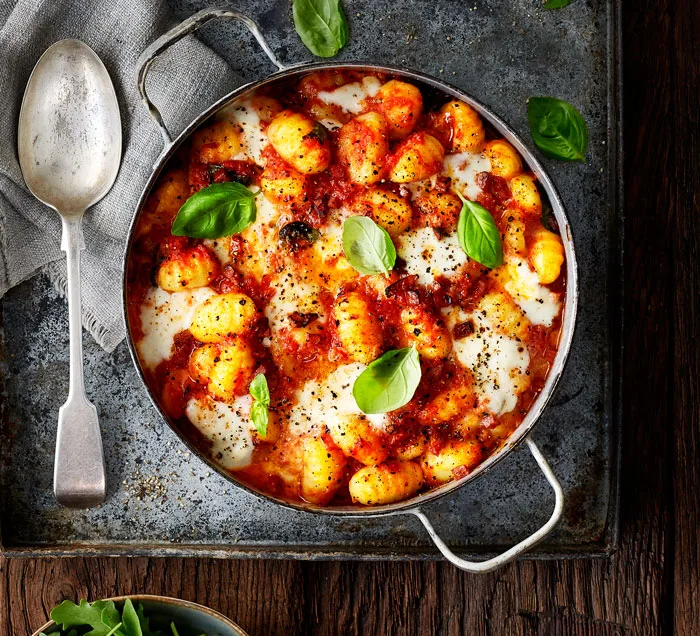

- frozen vegetables
- peppers
- tomatoes
- mince meat
click me
 if you press this image i will lead you to another tab
if you press this image i will lead you to another tab
Many people gain their programming education through universities and leave with a shiny piece of paper vouching for their skills. Despite what tradition may imply, college is not the right path for many developing programmers, and the industry knows it. Factors such as expenses, responsibilities, and other obstacles that appear in all of our lives can put college out of reach for some people. Add to that the recent explosion in online learners and resources, and many hiring managers have recognized that college is not the end-all-be-all it is advertised as.
If you can learn to code well (and can prove it), you can become a programmer with any educational background! Today, we’ll help demystify this kind of self-taught journey by going in-depth about why such a goal is attainable, various learning options, and strategies to prove programming skills.
start
middle
end
if you press this image i will lead you to another tab